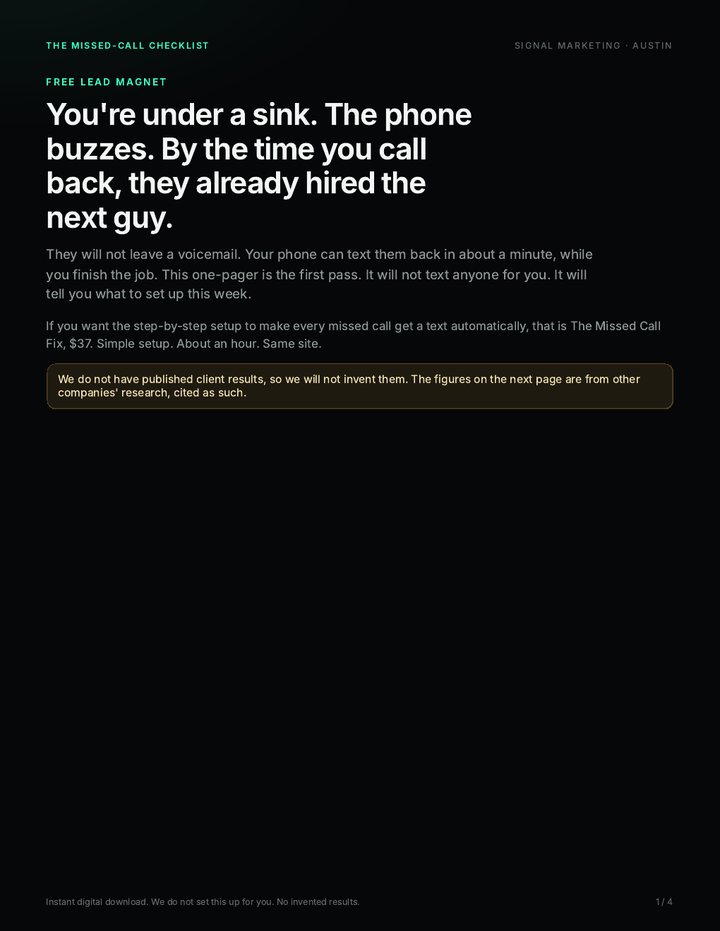

1
The call is missed
You're on a job. The ring dies in your pocket. Most people will not leave a voicemail.
Free checklist
Can't step away from the job to answer a call? They will not leave a voicemail. Your phone can text them back in about a minute, while you finish the job, during the day and after hours. This free checklist is the first pass: seven moves for this week. It will not text anyone for you. The $37 guide is the step-by-step setup. Simple setup. About an hour.

This week
You're on a job. The ring dies in your pocket. Most people will not leave a voicemail.
Write the message first. Then point your phone at one default tool so it actually sends.
Miss a call on purpose. Confirm the text arrives, and a reply reaches your phone.
If your book is already full and you do not want the work, you can stop here.